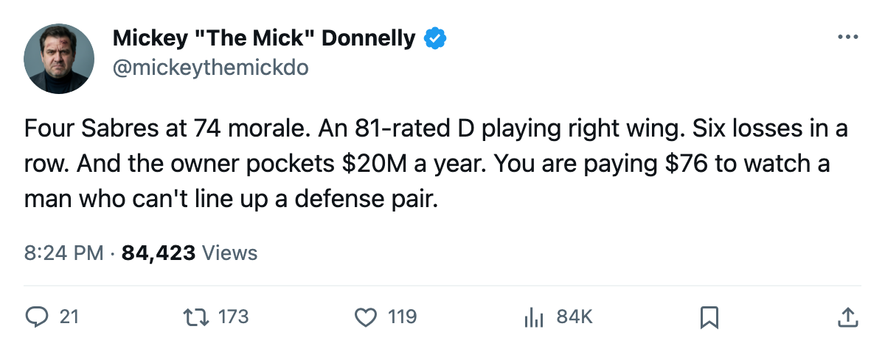
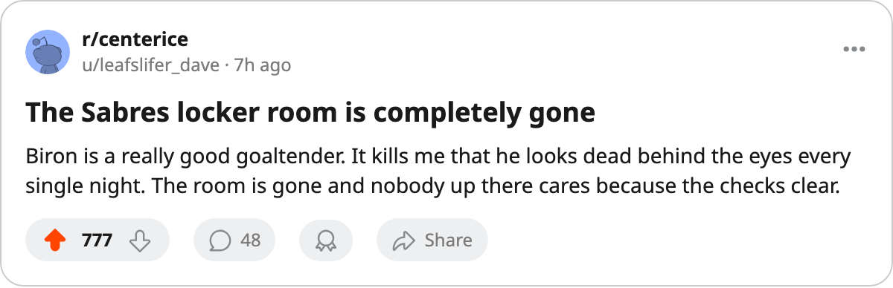

BUF
BUFFOUR MEN AT THE FLOOR, A DEFENSEMAN AT RIGHT WING, AND $20.31 MILLION IN THE TILL
Buffalo has the most miserable locker room in hockey, a coach who parks his best defenseman on the fourth line, and an owner who has no reason to change a single thing
 Mickey "The Mick" DonnellyColumnist, ex-goalie · The Penalty Box
Mickey "The Mick" DonnellyColumnist, ex-goalie · The Penalty BoxBuffalo's coach: 4 men at 74 morale, 81-rated D at right wing, 6 straight losses

Four Buffalo players sit in the League Scouting Bureau's lowest-15 morale list. Four. That is more than any other room in hockey, and it should be enough to get someone fired. It will not be, because the owner banked $20.31 million last year and the math works fine from where he sits.
 Alexei Zhitnik83 is an 81-rated defenseman playing right wing on the fourth line. The Bureau flags this as a mis-slot because it is insane.
Alexei Zhitnik83 is an 81-rated defenseman playing right wing on the fourth line. The Bureau flags this as a mis-slot because it is insane.  Jay McKee76, rated 75, and
Jay McKee76, rated 75, and  Brad Bombardir75, rated 73, play the actual blue line while a man rated 81 skates around on the wing like a checker who never checked anyone in his life. The coach made that choice. Every night, the coach makes that choice. And Buffalo sits 22-27-6, six straight losses, dead last in the Northeast behind a Montreal team that has 50 points.
Brad Bombardir75, rated 73, play the actual blue line while a man rated 81 skates around on the wing like a checker who never checked anyone in his life. The coach made that choice. Every night, the coach makes that choice. And Buffalo sits 22-27-6, six straight losses, dead last in the Northeast behind a Montreal team that has 50 points.
Then the bodies.  Martin Biron88 is an 88-rated goaltender, the best player on this roster by the Book's grade, sitting at 74 morale on a one-year deal worth $2.10M. He plays 57.1 minutes a night and he hates every one of them.
Martin Biron88 is an 88-rated goaltender, the best player on this roster by the Book's grade, sitting at 74 morale on a one-year deal worth $2.10M. He plays 57.1 minutes a night and he hates every one of them.  Andrew Brunette75, rated 74, plays 9.2 minutes a night for $1.10M and also sits at 74 morale.
Andrew Brunette75, rated 74, plays 9.2 minutes a night for $1.10M and also sits at 74 morale.  Mike Leclerc71 plays 9.3 minutes for $0.90M, same number, 74.
Mike Leclerc71 plays 9.3 minutes for $0.90M, same number, 74.  Eric Boulton67 carries the same 74 and barely plays at all for $0.40M.
Eric Boulton67 carries the same 74 and barely plays at all for $0.40M.
That is not a coincidence. That is a room. A coach who cannot figure out where his best defenseman goes has built a locker room where the backup winger on the fourth line hates his life as much as the starting goaltender.  Steve Begin68, a center rated 73, has fallen three points on the Bureau's Development Index, which means the coach can't even get his fourth-line center moving forward.
Steve Begin68, a center rated 73, has fallen three points on the Bureau's Development Index, which means the coach can't even get his fourth-line center moving forward.
Buffalo's payroll is $44.16 million, 19th in the league. Revenue is $60.04 million. The owner takes home $20.31 million and the building holds 16,060 people at $76 a ticket, which is not a fire-sale number for a team this bad. They sit $0.71 per point, 16th in the league on that figure. They do not have a single player in the top 30 scorers. They do not have a player on a heater. They do not have a reason to believe anything changes next season, and the owner has no reason to spend a dollar more than he already does.
The hot seat is not warm. It is on fire. A coach who parks an 81 at right wing, runs a room where the goaltender and three fourth-liners all share the same miserable morale number, and watches his team lose six straight cannot talk about process or development or the long term. Not in Buffalo. Not at $76 a seat. Not while the till fills and the room rots.
BUF visits WSH tonight. Washington is 31-21-7, riding a one-game win, and the Sabres have never won more than two in a row since their last heater went cold.

